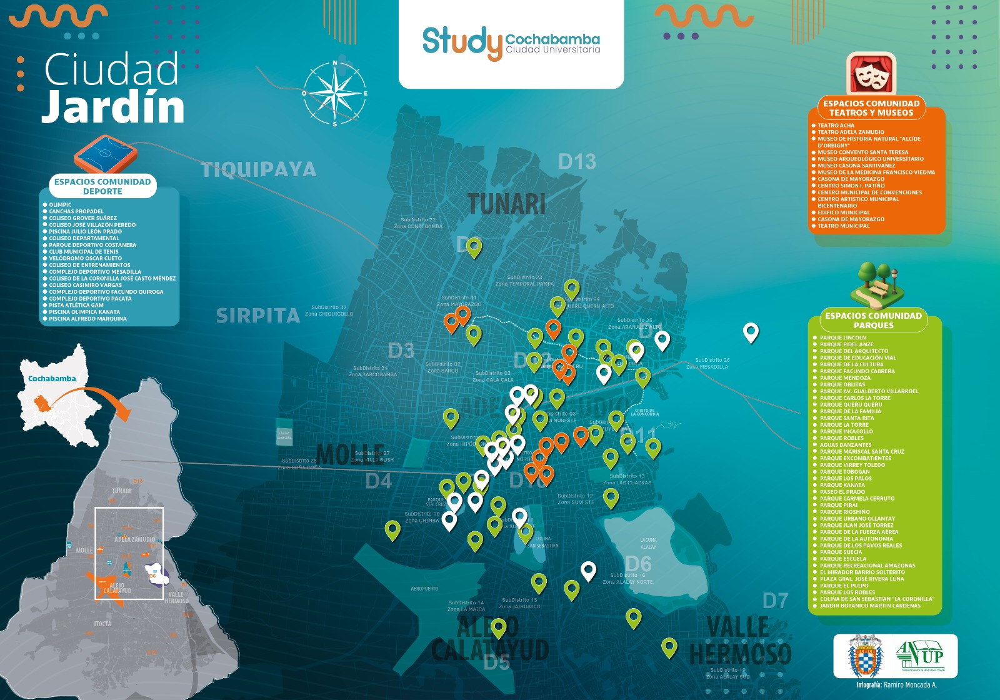
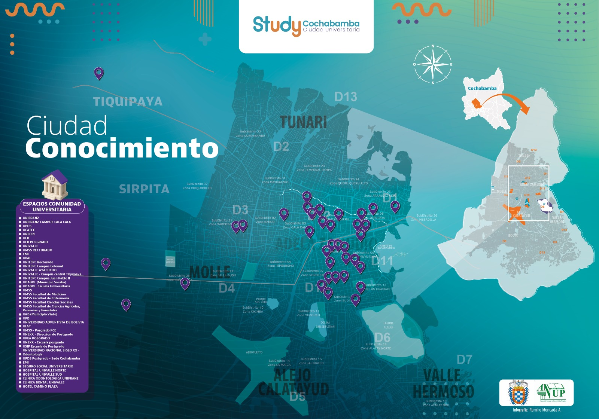
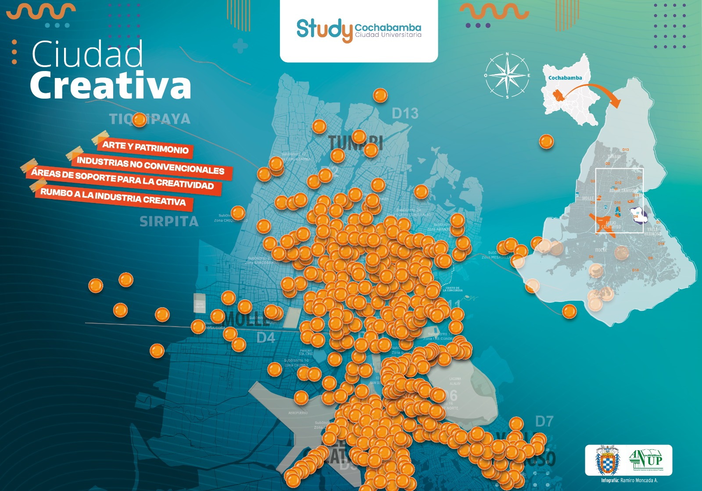
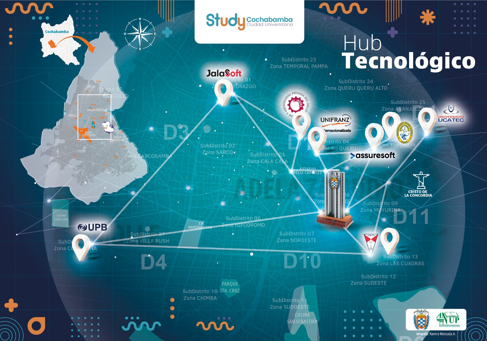
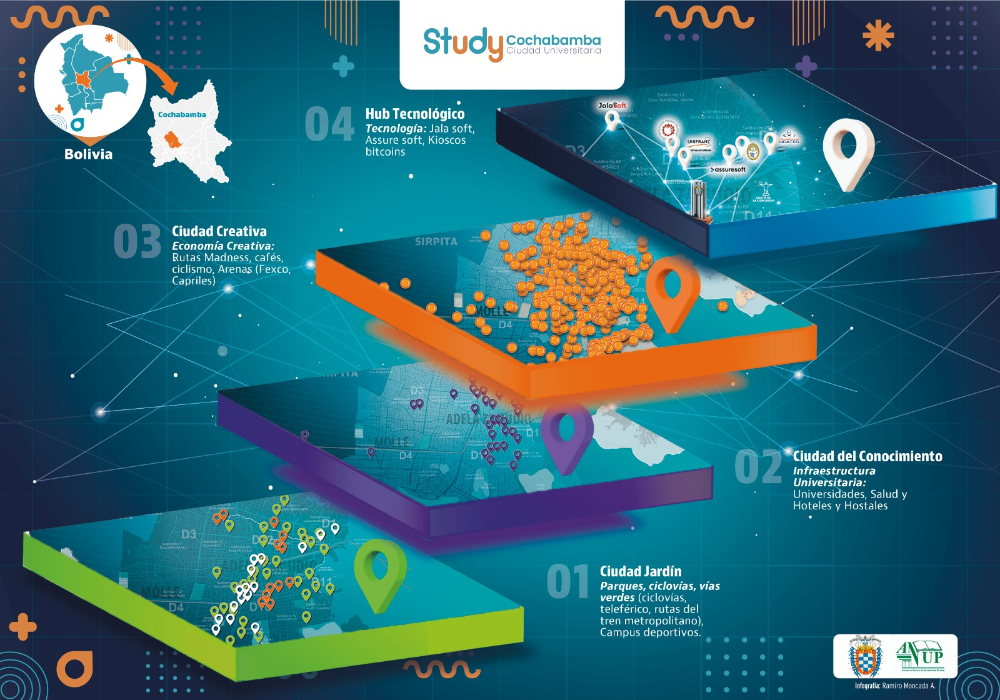
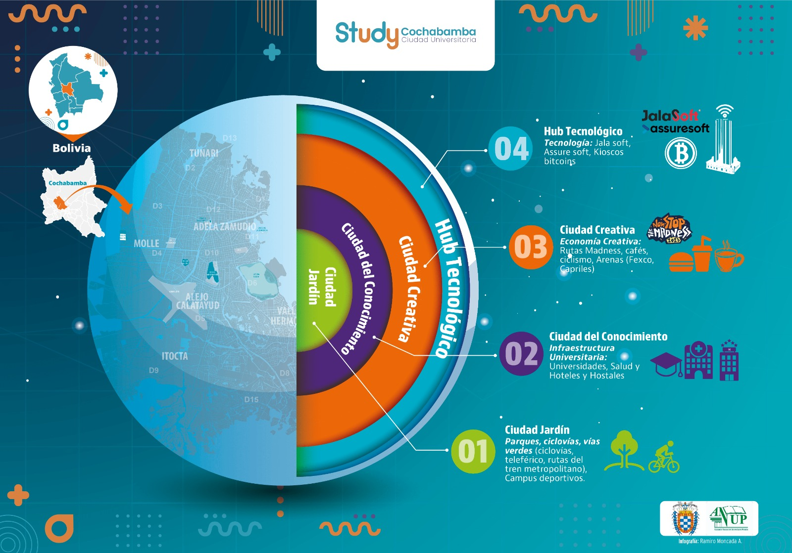

Ciudad Jardín
El paisaje, la escala humana y la calidad urbana como punto de partida.

Polígono de Innovación Económica · Cochabamba
PIE 1 articula municipio, universidades y empresas para transformar el talento, la tecnología y la inversión en empleo, innovación y una nueva dinámica urbana.
Territorio vivoUna iniciativa para activar el potencial económico de Cochabamba
01 · Cochabamba
Seis miradas construyen una narrativa común: del entorno que habitamos al ecosistema de conocimiento que podemos activar.
El paisaje, la escala humana y la calidad urbana como punto de partida.

Universidades, formación y talento como infraestructura estratégica.

Identidad, cultura y creatividad que también producen valor económico.

Conexiones capaces de atraer inversión, innovación y oportunidades.

Las capas de ciudad se encuentran en un mismo territorio de oportunidad.

Puntos estratégicos que concentran capacidades y detonan transformación.

02 · El territorio
El mapa general permite comprender la relación entre los polígonos y avanzar hacia la delimitación precisa del PIE 1.
Territorio vivo · Cartografía integrada
Tres lecturas complementarias para comprender la delimitación, la infraestructura municipal y la actividad económica del territorio.

03 · Los tres capitales
Inversión pública habilitante, incentivos territoriales, alianzas y nuevas fuentes de financiamiento.
DéficitEmpresas y familias.
ExcedenteSistema financiero —banca— y organismos internacionales.
Estudiantes, docentes, investigadores, graduados y trabajadores conectados con retos reales.
DéficitSector público, especialmente gobiernos municipales.
ExcedenteUniversidades.
Datos, conectividad, transferencia, laboratorios y servicios digitales al servicio de la ciudad.
DéficitSector público, especialmente gobiernos municipales.
ExcedenteUniversidades.
04 · Modelo PIE 1
Lectura territorial integrada
Empleo, innovación y transformación urbana
Articulación municipal
Un proceso continuo que convierte la respuesta inmediata en capacidades y resultados sostenibles para el territorio.
Activación
Activa la economía en el corto plazo mediante medidas, alianzas y acciones inmediatas.
Nodo articulador
Territorializa la reactivación, articula capacidades y convierte las acciones coyunturales en una estrategia sostenible.
Plataformas habilitadoras
Intervenciones territoriales
Resultado transversal
“La reactivación responde a la urgencia; el PIE 1 convierte esa respuesta en capacidades, proyectos y empleo sostenible.”
05 · Proyectos
Conocimiento e innovación
Convierte conocimiento en soluciones, prototipos y servicios para el territorio.
Información para decidir
Produce información, indicadores y evidencia para orientar decisiones.
Transformación económica del territorio
Activa identidad, experiencia urbana y encadenamientos de valor local.
Talento y empleo
Vincula formación, experiencia remunerada y oportunidades profesionales.
Visibilidad y seguimiento
Hace visibles el territorio, los proyectos, los actores y sus avances.
Cinco proyectos conectados para convertir las capacidades del territorio en resultados
06 · Impacto esperado
Las metas cuantitativas se publicarán una vez concluida la prefactibilidad. Desde el inicio, el modelo medirá cuatro dimensiones.
Recursos movilizados y proyectos financiados.
Oportunidades formales y talento retenido.
Soluciones, transferencias y emprendimientos.
Espacio público, conectividad y nueva actividad urbana.
Línea base y metas por definir en la etapa de prefactibilidad
“El PIE 1 medirá no solo cuánto ejecuta, sino cuánto transforma el territorio.”
07 · Gobernanza
08 · Documentos y fuentes
09 · Participa
Universidades, empresas, instituciones públicas, cooperación y sociedad civil pueden ser parte de la construcción del PIE 1.